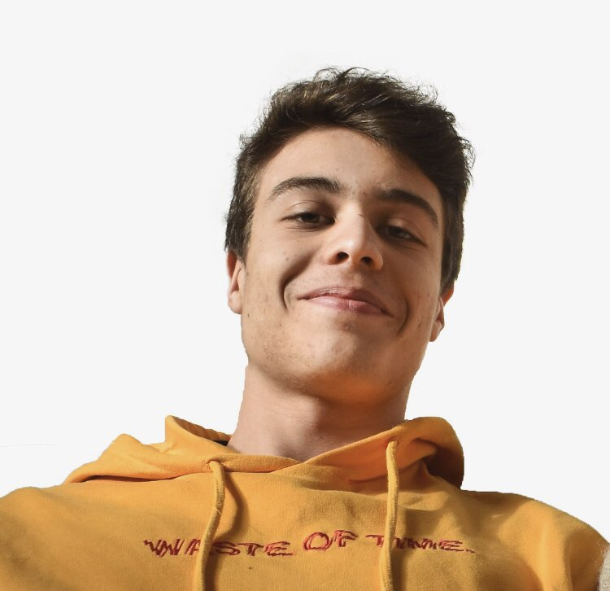

Le Game Designer est un métier dans l'univers de la création et du
développement du jeu vidéo qui occupe un poste clé dans la chaîne de
production d'un jeu et dans sa complexité. C'est lui qui, en effet,
conçoit le gameplay et aide à une cohésion. Le gameplay est la
mécanique et la prise en main du jeu. Son premier objectif
est de rendre le jeu le plus attractif possible afin que
les utilisateurs y passent le plus de temps et y
donnent d'autant plus d'intérêt.
C'est à lui
d'imaginer comment le projet va évoluer,
quels chemins il va prendre, d'inventer
des idées originales pour que le
joueur reste fixé sur le jeu.
Afin d'en apprendre plus sur ce sujet, une interview de Thibaud TRACOL,
jeune étudiant à l’IUT de Bobigny en Licence Pro métiers du jeu vidéo
(Game Design et Level Design), a été réalisée.
Portrait de Thibaud TRACOL :

Nous lui avons posé
plusieurs question qui traitent, des compétences requises pour
être Game Designer, du travail en équipe au sein d'un projet,
du rôle du Game Designer, et de ce qu'il préfère ainsi que
de ce qu'il trouve difficile dans ce métier.
Voici donc une vidéosuccinct de cette interview.
(La version longue se trouvera en dessous
de la version courte)
Si vous souhaitez voir la version longue de l'interview, la voici :